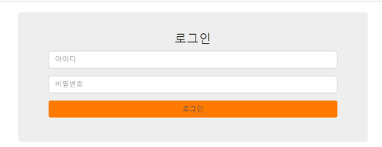
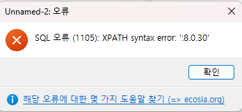
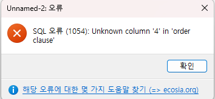

[DB] SQL Injection 알아보기 (w. PreparedStatement, Stored Procedures)
서론
CS 스터디에서 9월 4일에 발표한 SQL Injection에 대해 정리한 문서를 블로그에 공유하고자 한다.
SQL Injection에 대해 설명해 주세요.
SQL Injection이란, 데이터베이스를 사용하는 웹 애플리케이션을 공격하는데 사용되는 코드 인젝션 공격 기법을 말합니다.
주로 공격자가 입력 필드에 악성 SQL 문을 삽입해 실행시키는 방식으로 공격하며, 데이터베이스의 정보를 불법적으로 열람 또는 조작할 수 있는 취약점입니다.
Injection 공격은 오픈소스 웹 애플리케이션 보안 프로젝트인 OWASP에서 매년 상위 10대 취약점에서 근 20년간 상위권을 차지하고 있으며, 단순히 신원 위조, 기존 데이터 변조와 같은 공격 뿐만 아니라 관리자 탈취, 데이터 삭제, 시스템 데이터 공개와 같이 시스템에 치명적인 공격을 불러올 수 있습니다.
공격 유형
SQL Injection은 기본적으로 데이터 입력 란에 메타 문자('', OR 등 SQL문을 이루는 문자들)를 삽입해 기존에 존재하지 않던 SQL 명령을 제어 영역(control plane, SQL 명령어 및 관련 구조가 위치하는 영역. ~= user input)에 배치하는 방식으로 이뤄집니다.
이러한 구조적 결함은 SQL이 제어 영역과 데이터 영역(data plane, 실제 데이터 값이 위치하는 영역. ~= SQL Query)을 구분하지 않고, 단순히 문자열로 된 명령을 실행한다는 점에서 기인합니다.
SQL Injection은 크게 아래 3가지 유형으로 구분됩니다.
에러 기반 SQL 인젝션(Error-based SQL Injection)
에러 기반 SQL 인젝션은 데이터베이스 서버에서 발생한 오류 메세지를 바탕으로 현재 API가 어떤 SQL 명령을 호출하는지, 데이터베이스 구조는 어떤지 등의 정보를 얻어내 공격하는 기법입니다.
이는 공격당하는 웹 애플리케이션 서버가 SQL 쿼리 수행시 발생한 오류를 HTTP 응답으로 반환하도록 동작하는 경우 가능한 공격입니다.
예시

위와 같은 입력 폼으로 아이디, 비밀번호를 입력받아 로그인을 수행하는 웹 애플리케이션이 있다고 가정하겠습니다.
위 애플리케이션이 구동되는 Spring 서버에서는 DB에서 일치하는 유저를 불러오기 위해 다음과 같은 코드가 동작하게 됩니다.
{
...
Statement st = conn.createStatement();
ResultSet rs = st.executeQuery(
"SELECT * FROM member WHERE userid = '" + ID + "' AND userpw ='" + PW + "'");
}
즉, DB에서는 다음과 같은 SQL문이 동작하게 될 것입니다.
SELECT * FROM member WHERE userid ='$ID' AND userpw ='$PW'
이때, pw에 'OR 1=1 --를 입력하거나 extractvalue() 함수 등을 사용해 DB 정보를 탈취할 수 있습니다.
OR 1=1 --는 WHERE 절의 조건을 항상 참이 되도록 하고, 이어지는 조건들을 --를 통해 주석 처리하게 됩니다. 따라서 id에 (실제 서비스에 가입된) id중 어떤 것을 입력해도 로그인할 수 있게 됩니다.
extractvalue(xml_frag, xpath_expr) 함수의 경우 XML과 XPath 표현식을 인자로 받아, XML에서 XPath 표현식에 일치하는 데이터를 추출 및 반환하는 함수입니다.
이때, 두 번째 인수에 유효하지 않은 XPath 표현식이 사용될 경우 XPATH syntax error를 통해 해당 인수 값을 출력하게 되는데, 이것이 SQL 쿼리일 경우 실행 결과를 에러 메시지에 포함한다는 점을 활용해 공격에 사용됩니다.
따라서 두 번째 인수에 콜론(':' 또는 0x3a(16진수 표현)을 사용)을 맨 앞에 추가하므로써 항상 유효하지 않은 XPath 표현식을 만들고, concat()으로 뒤에 실제 실행할 SQL 쿼리를 넘겨 정보 탈취를 시도합니다.
가령 PW에 ' AND extractvalue(rand(),concat(0x3a,version()))-- 라는 구문을 넣게 된다면 실제 SQL 쿼리 문은 다음과 같게 될것입니다. (version()은 현재 MySQL 버전을 반환하는 함수입니다.)
SELECT * FROM member WHERE userid ='' AND userpw ='' AND extractvalue(rand(),concat(0x3a,version()))--'
이를 실행하면 아래 그림처럼 서버의 MySQL 버전을 에러와 함께 반환하게 됩니다.

이를 통해 공격자는 DB 버전, DB 명, 테이블 명, 컬럼 명 등 다양한 데이터들을 추출할 수 있게 됩니다.
UNION 기반 SQL 인젝션(Union-based SQL Injection)
UNION 기반 SQL 인젝션은 웹 애플리케이션이 DB 질의한 결과를 HTTP 응답에 포함해 반환하는 경우, SQL문을 조작하여 DB 구조 및 데이터를 탈취하는 공격 기법입니다.
이때, 원래 애플리케이션이 반환할 데이터는 필요하지 않으므로 음수 값과 같이 DB에 존재하지 않을만한 값을 입력 값으로 전달하고, 이후 UNION 또는 UNION ALL을 이용해 DB의 다른 데이터 값을 추출하는 SQL 쿼리를 덧붙여 서버에 전달하게 됩니다.
UNION과 UNION ALL
UNION과 UNION ALL은 두 개 이상의 SELECT 쿼리 결과를 하나로 합쳐주는 집합 연산자로, 이때 합쳐질 쿼리들은 다음 조건을 만족해야 합니다.
- 각 쿼리들은
SELECT절에서동일한 갯수의열을 사용해야 한다. - 각 쿼리에서
동일한 순서의 컬럼들은 서로 호환되는 자료형을 가져야 한다.
또한, UNION은 쿼리 결과값 통합시 중복된 레코드를 제거하는 반면, UNION ALL은 중복 제거 절차 없이 모든 레코드들을 반환한다는 차이가 있습니다.
예시
쇼핑몰 웹 애플리케이션에서 물품의 ID를 사용자로 부터 입력받으면, 해당 물품의 ID, 이름, 가격을 조회하는 API가 있다고 가정하겠습니다.
해당 API가 DB에 요청할 SQL 쿼리는 다음과 같을 것입니다.
SELECT item_id, item_name, item_price
FROM item
WHERE item_id = '$item_id';
또한, 해당 API는 HTTP 응답으로 이름과 가격, 즉 item_name, item_price를 반환합니다.
이러한 상황에서 ID로 -99 UNION ALL SELECT version(), database(), 2--를 전달한다면 SQL 쿼리는 다음과 같이 바뀌게 됩니다.
SELECT item_id, item_name, item_price
FROM item
WHERE item_id = -99
UNION ALL
SELECT version(), database(), 2--;
당연히 상품 ID가 음수인 상품은 존재하지 않을 것이므로 상품 데이터는 전혀 반환되지 않고 UNION으로 결합한 SELECT 쿼리에 포함된 SQL 서버 버전, DB명, 숫자(컬럼 갯수 및 타입을 맞추기 위한 임의 값)를 반환하게 됩니다.
열 갯수 알아내기
그리고 UNION에서 열의 갯수를 맞춰야 하는 조건 때문에, 현재 쿼리의 컬럼 갯수를 알아야 할 수 있습니다.
이때 ORDER BY 절을 활용하면, 원래의 SQL 쿼리의 열 갯수를 알아낼 수 있습니다.
ORDER BY 절에서 정렬 기준 컬럼을 지정할 때, 열 이름을 직접 기입할 수도 있지만 해당 컬럼의 순번을 기입할 수도 있습니다.
즉, 위 케이스의 경우 ORDER BY 3을 기입하면 SQL 쿼리의 세 번째 컬럼인 item_price를 기준으로 정렬하게 됩니다.
이러한 순번은 SQL 쿼리가 불러올 컬럼 갯수만큼 배정되므로 해당 갯수 이상의 숫자를 기입하게 되면 다음과 같은 오류가 발생하게 됩니다.

따라서 ORDER BY 문에 기입할 순번을 하나씩 차례대로 증가시키다가 DB에서 오류가 발생하거나 비정상 응답을 반환하게 되면, 바로 전의 순번이 원래의 SQL문의 컬럼 갯수와 같게되는 것입니다.
블라인드 SQL 인젝션(Blind SQL Injection)
블라인드 SQL 인젝션은 상기한 SQL 인젝션들과 달리, 웹 애플리케이션이 HTTP 응답에 DB 오류 메시지나 데이터를 포함하지 않을때 사용할 수 있는 공격 기법입니다.
즉, 서버의 직접적인 응답 대신 알고싶은 정보가 포함된 특정 조건을 SQL 쿼리에 포함시켰을때 HTTP 응답의 상태가 달라지거나, 응답에 걸리는 시간의 차이를 통해 해당 조건이 참인지 거짓인지 알아내므로써 데이터베이스 내 정보를 유추하는 공격 기법입니다.
크게 응답의 차이를 통해 유추하는 불린 기반 방식과 서버의 응답 시간 차이를 통해 유추하는 시간 기반 방식이 있습니다.
블라인드 불린 기반 SQL 인젝션(Blind Boolean-Based SQL Injection)
블라인드 불린 기반 SQL 인젝션은 SQL 쿼리의 참/거짓여부에 따른 HTTP 응답 내용, 상태 코드 등의 차이가 존재할 때 이를 통해 정보를 유추할 수 있는 공격 기법입니다.
예시
게시판 애플리케이션에서 게시글 id를 URL 인자로 받아 게시물을 불러오는 API를 예시로 들어보겠습니다. 해당 API는 다음과 같은 SQL 쿼리를 요청합니다.
SELECT subject, content, author
FROM board
WHERE id='$id'
만약 올바른 게시글 id를 전달받았다면 정상적으로 해당 게시글을 가져올 것이고, 그렇지 않다면 아무것도 반환하지 않을 것입니다.
예를 들어 id를 1 AND 1=0-- 로 넘겼다면 SQL문은 다음과 같게 됩니다.
SELECT subject, content, author
FROM board
WHERE id=1 AND 1=0--
우리가 넘긴 AND 1=0 조건 때문에 게시물 조회 SQL 쿼리는 거짓이 되어 아무 것도 불러올 수 없을 것입니다. 반면 1 AND 1=1 --을 넘겼다면 정상적으로 게시물을 조회해올 것입니다.
이를 바탕으로 데이터베이스의 이름을 알아내고 싶다고 가정해보겠습니다.
그렇다면 먼저 DB 이름의 길이를 알아내야 하므로, SQL의 LENGTH()을 활용합니다.
id로 1 AND LENGTH(database()) = 1 --, 1 AND LENGTH(database()) = 2 --, … 처럼 점점 값을 증가시키며 응답이 정상적으로 반환될 때 까지 반복합니다.
1 AND LENGTH(database())=1--+ (결과:거짓)
1 AND LENGTH(database())=2--+ (결과:거짓)
1 AND LENGTH(database())=3--+ (결과:참) <- 현재 DB의 이름의 길이는 3임
이후 한글자 한글자씩 비교하며 DB 이름의 각 자리가 무엇인지 확인합니다. 이때 SUBSTRING() 함수를 활용합니다.
1 AND SUBSTRING(database(), 1, 1)='a'--+ (결과:거짓)
1 AND SUBSTRING(database(), 1, 1)='b'--+ (결과:거짓)
1 AND SUBSTRING(database(), 1, 1)='c'--+ (결과:참) <- 현재 DB의 이름의 첫 글자는 'c'임
이를 반복해 알아낸 각 자리의 문자들을 결합하면 DB의 이름을 알아낼 수 있습니다.
블라인드 시간 기반 SQL 인젝션(Blind Time-Based SQL Injection)
블라인드 불린 기반 SQL 인젝션은 SQL 쿼리의 참/거짓여부에 따른 HTTP 응답 내용, 상태 코드 등의 차이가 존재를 확인할 수 없지만, 서버 응답 시간을 제어할 수 있을 경우 사용 가능한 공격 기법입니다.
즉, 기존 SQL 쿼리에 특정 조건이 참일 경우 응답을 지연시키는 함수를 사용해 해당 조건의 참/거짓 여부를 판별하게 됩니다.
응답 시간을 제어하는 함수는 DBMS별로 상이하며, 예시로 들 MySQL(및 MariaDB)의 경우 sleep() 함수를 사용합니다.
예시
위와 마찬가지로 게시판 애플리케이션에서 게시물 조회 API를 사용한다고 가정하겠습니다.
이때 id로 1 AND if(1=1, sleep(5), false)-- 와 같은 구문을 전달했을 때 기존 SQL 쿼리에 정상적으로 포함된다면, SQL문은 다음과 같게 됩니다.
SELECT subject, content, author
FROM board
WHERE id=1 AND if(1=1, sleep(5), false)--
이때 if문이 동작하기 때문에 첫 번째 인자로 주어진 조건식인 1=1이 참이므로, 서버는 5초간 대기 상태에 있다가 응답하게 될 것입니다.
이를 바탕으로 불린 기반 공격 처럼, 조건문에 원하는 정보에 대한 조건을 포함해 API 요청을 반복하므로써 원하는 정보를 알아낼 수 있습니다.
1 AND if(LENGTH(database())=1, sleep(5), false)--+ (결과:거짓)
1 AND if(LENGTH(database())=2, sleep(5), false)--+ (결과:거짓)
1 AND if(LENGTH(database())=3, sleep(5), false)--+ (결과:참) <- 현재 DB의 이름의 길이는 3임
방어법 #
이러한 SQL 인젝션을 방지하기 위해서는 ① 문자열들을 연결해 동적 SQL 쿼리를 생성하지 않거나, ② 실행된 쿼리에 악성 SQL 입력이 포함되지 않도록 해야 합니다.
Prepared Statement 사용하기
준비된 구문(Prepared Statement), 또는 파라미터화 된 쿼리(Parameterized Query)를 사용하게 되면 동적 쿼리보다 쿼리를 작성 및 이해하는데 쉬우며, 개발자가 먼저 SQL 쿼리를 정의한 뒤 이후에 각 매개변수들을 쿼리에 전달하도록 합니다.
또한 DB 쿼리가 이러한 형태를 띄는 경우 DB는 사용자 입력에 상관없이 항상 코드와 데이터를 구분합니다. 그리고 공격자가 SQL 명령을 삽입해도 쿼리의 원래 의도를 변경할 수 없도록 보장합니다.
// 코드 예시
// 매개변수로 사용될 해당 인자는 꼭 검증하는 것이 좋습니다.
String custname = request.getParameter("customerName");
String query = "SELECT account_balance FROM user_data WHERE user_name = ? ";
PreparedStatement pstmt = connection.prepareStatement( query );
pstmt.setString( 1, custname);
ResultSet results = pstmt.executeQuery( );
Java의 PreparedStatement, C# .NET의 OleDbCommand 등이 이를 구현하고 있으며 이외에도 Ruby, PHP, Perl 등 다양한 언어에 Prepared Statement 구현체가 존재합니다.
또한 SQL 인젝션과 유사한 HQL 인젝션이 존재하는 SQL 추상화 계층인 HQL(Hibernate Query Language)에도 Prepared Statement 형태의 구현체가 존재합니다.
Stored Procedures 사용하기
저장 프로시저 (Stored procedure)란 DBMS에 저장되어 재사용 및 공유할 수 있는 일련의 SQL 쿼리 집합입니다.
Stored Procedure가 항상 SQL 인젝션으로 부터 안전하지 않지만, 특정 표준 Stored Procedure를 사용하면 Parameterized Query를 사용하는 것과 동일한 효과를 갖게 됩니다.
다만, Stored Procedure를 사용할 경우 오히려 시스템이 노출될 경우의 위험을 증가시킬 수 있습니다.
가령 db_datareader, db_datawriter, db_owner세 가지 기본 역할이 존재하는 MS SQL Server에서는 Stored Procedure 실행을 위해 실행 권한(Execute right)이 필요하며, 만약 이 세가지 역할만 사용하는 서비스라면 웹앱이 db_owner 역할로 실행되어야 Stored Procedure를 사용할 수 있게 됩니다.
따라서 사용자에게 읽기 접근 권한만 할당하기 위해 db_datareader 역할을 할당하는게 불가능해지며, 공격자는 DB에 대한 모든 권한을 얻게 됩니다.
String custname = request.getParameter("customerName");
try {
// Stored Procedure를 호출할 때, 매개변수들을 인자로 전달한다.
CallableStatement cs = connection.prepareCall("{call sp_getAccountBalance(?)}");
cs.setString(1, custname);
ResultSet results = cs.executeQuery();
// … result set handling
} catch (SQLException se) {
// … logging and error handling
}
입력 허용 목록을 통한 유효성 검사
만약 사용자 입력에 의해 변경될 값이 테이블 이름, 컬럼 명 처럼 바인드 변수를 할당할 수 없는 위치라면 쿼리를 재설계 하거나, 설명할 입력 유효성 검사를 수행하는 것이 알맞은 방어책 입니다.
이때, 테이블 또는 컬럼 명을 사용자 매개변수 값을 통해 전달 받을 경우, 해당 값이 다른 테이블의 다른 컬럼을 이름을 가질 수도 있습니다.
이러한 경우 근본적으로 이를 막도록 코드를 재작성 하는것이 좋지만, 이는 현실적으로 쉽지 않습니다.
따라서 사용자 매개변수를 예상 가능한 테이블에 매핑하여 유효하지 않은 사용자 입력이 쿼리에 포함되는 것을 막아야 합니다.
String tableName;
// 사용자 매개변수 값에 따라 tableName을 코드에서 지정합니다.
switch(PARAM):
case "Value1": tableName = "fooTable";
break;
case "Value2": tableName = "barTable";
break;
...
default : throw new InputValidationException("unexpected value provided"
+ " for table name");
추가로, 꼭 동적 쿼리를 사용해야 한다면 동적 쿼리에 SQL 구문을 삽입할 수 없도록 API 또는 StoredProcedure의 매개변수를 가능한 문자열이 아닌 타입으로 받는것이 좋습니다.
즉, 예를 들어 Date, Number, boolean, enum 등으로 받게 된다면 안전하게 사용자로부터 입력을 받는것이 가능합니다.
public String someMethod(boolean sortOrder) { String SQLquery = "some SQL ... order by Salary " + (sortOrder ? "ASC" : "DESC");` ...
참고
- Types of SQL Injection (SQLi) - GeeksforGeeks
- SQL Injection Attack: How It Works, Examples and Prevention (brightsec.com)
- SQL 인젝션 (SQL Injection) - MDN Web Docs 용어 사전: 웹 용어 정의 | MDN (mozilla.org)
- SQL Injection Prevention - OWASP Cheat Sheet Series
- SQL Injection Cheat Sheet | Invicti
- SQL Injection | OWASP Foundation
- Blind SQL Injection | OWASP Foundation
- [카드뉴스] ‘오래된 위협, 그러나 여전히 강력한’ SQL 인젝션 (boannews.com)
- Error 기반 SQL 인젝션 | Pentest Gym | 버그바운티클럽 (bugbountyclub.com)
- UNION 기반 SQL 인젝션 | Pentest Gym | 버그바운티클럽 (bugbountyclub.com)
- Blind SQL 인젝션 | Pentest Gym | 버그바운티클럽 (bugbountyclub.com)